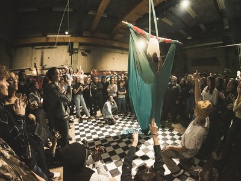

vrijdag
16:00-02:00
Nomadenmakers
De ateliers verdwijnen in ‘s-Hertogenbosch. De stad wordt volgebouwd en plekken zoals oude scholen worden platgelegd. Dit zijn vaak ateliers en zorgt ervoor dat het steeds lastiger wordt voor kunstenaars om een werkplek te vinden/onderhouden. Deze kunstenaars komen in actie!


zaterdag
20:00-21:30
Blunt Axe
Deze manisch, allitererende, ratelende, declamerende, bezeten, taalkunstenaar belichaamt de ware freak in ons. ACG Vianen (1972) neemt je mee in zijn bizarre wereld en doet niet aan kontlikkerij. Met zijn band zet hij een performance neer waar je je knokkelige vingers bij af kan likken.


zaterdag
21:00-23:00
Zwoel
Vrijheid, creativiteit en harmonie, dat zijn de kernwaarden van Zwoel. Deze waarden staan ten grondslag aan het denken, het gedrag en komt tot uiting in het werk van Zwoel. Ze toveren een rauwe locatie om tot paleis van verbazing waar feest gecombineerd wordt met kunsten en creativiteit.
zaterdag
21:10-21:50
Clittenband
Altijd al gedroomd van een trio? Droom niet verder, want Clittenband komt en staat voor je klaar! In hun Nederlandstalige grootkunst wordt politiek poëtiek en lavendel erotiek. Het trio speelde vorig jaar ook op RAUWKOST, maar dit jaar organiseren ze een complete festivallocatie in de kerkers van Willem Twee: CLIT CITY.

vrijdag
22:00-01:00